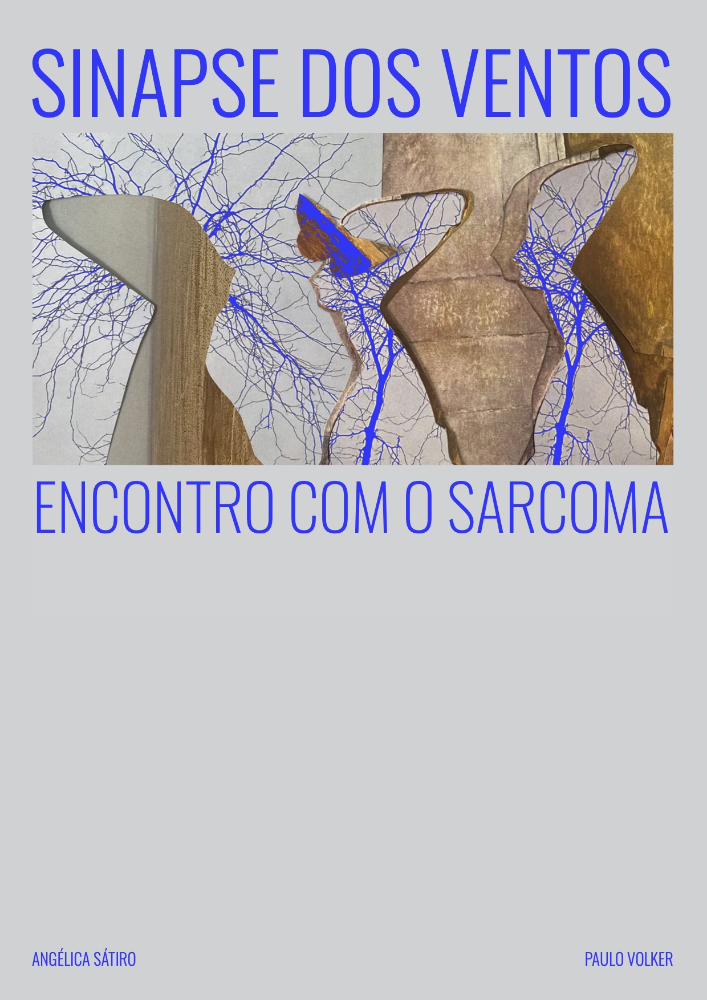
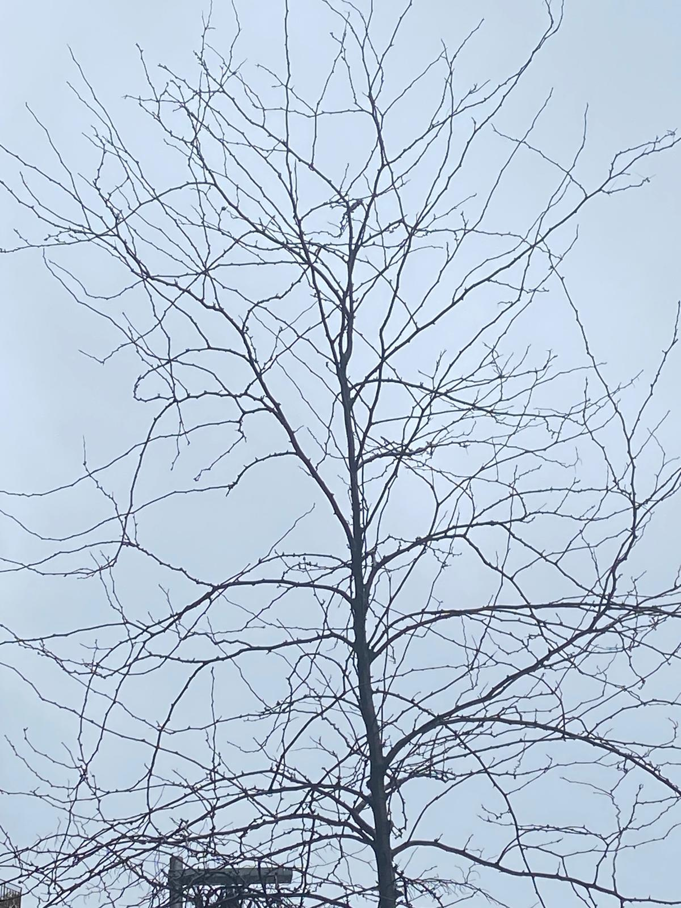

O QUE VOCÊ VAI ENCONTRAR
Diálogo, corpo, amizade e finitude
O livro transita por perguntas sobre amor, alteridade, arte, silêncio, vulnerabilidade, inteligência, dor, sentido e reflexão. Não explica a vida de fora: a pensa enquanto acontece.
UMA OBRA LITERÁRIO-FILOSÓFICA
Uma abordagem dialógica para a finitude
Dois amigos sustentam 153 dias de diálogo entre Brasil e Espanha, atravessando doença, amizade, vulnerabilidade, criatividade e pensamento. O resultado é uma peça íntima, reflexiva e profundamente humana.

SINOPSE
A obra nasce no ponto mais delicado: um diagnóstico de sarcoma e o itinerário de cirurgias, cuidado, espera e transformação. Desde aí, a escrita recolhe o cotidiano e o converte em pensamento vivo.
O QUE VOCÊ VAI ENCONTRAR
O livro transita por perguntas sobre amor, alteridade, arte, silêncio, vulnerabilidade, inteligência, dor, sentido e reflexão. Não explica a vida de fora: a pensa enquanto acontece.
TOM
A linguagem mescla a proximidade das mensagens digitais com a densidade de um ensaio poético-filosófico. A forma conserva a espontaneidade do WhatsApp, mas com uma profundidade que toca a sensibilidade do leitor.
"Frente a uma doença grave, a pessoa deve ser o sujeito de sua cura e sua sanidade, em situação de diálogo com quem sabe acompanhar essa crise."
— Ideia central do livro

FICHA TÉCNICA


ADQUIRA O LIVRO
Disponível em formato digital. Clique abaixo para garantir o seu exemplar.
Comprar o ebook